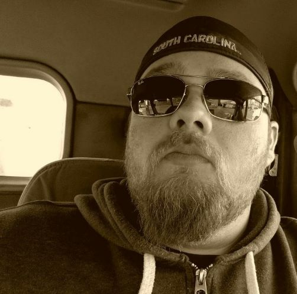

Michael's Portfolio
I'm a software engineer trying to gain more skills and add value to a team. For the past 9 years I have been a commercial driver. My time in this profession has allowed me to see all lower 48 states from the view of a windshield. Though I have enjoyed my time in that industry, it is now time to challenge myself in the pursuit of a new goal.
Projects
This was the first project I did while in Thinkful. It is a 10 question quiz on Javascript, Html and Css built using those languages.
About Me
I always loved playing with and building computers. Most of my family uses computers that I built. Coding and software were always a fascination but I spent many years just watching tutorials and never actually building anything. Feeling unfulfilled in my previous profession, I decided that it was time to make a change. I learned of coding bootcamps and decided to do the Thinkful program because their reviews were very positive and the curriculum looked to be comprehensive. After thinkful I want to work for a company with a solid team structure and great programmers to learned from.
I am currently looking to work as a software engineer. If you are interested, I can be found at the following links.